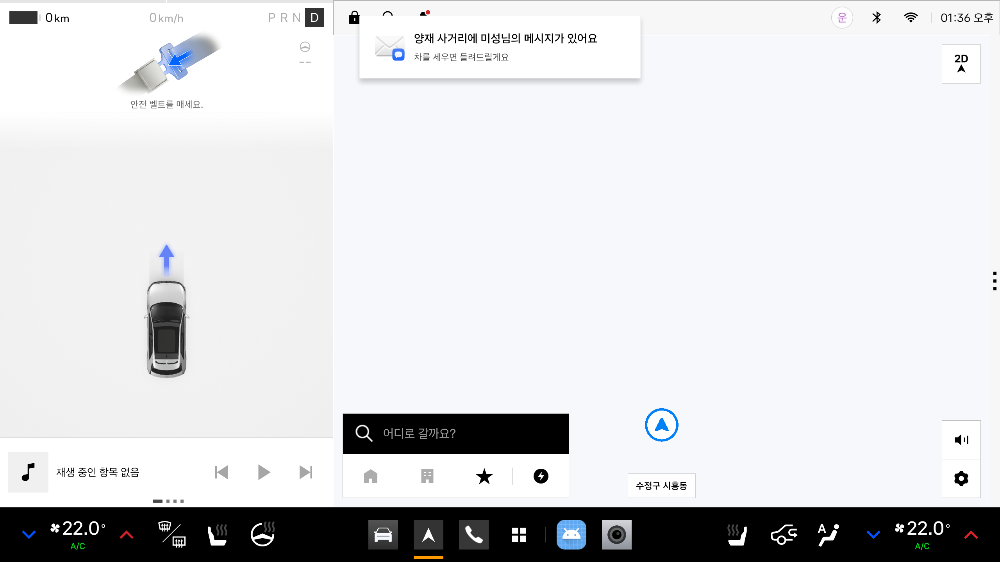
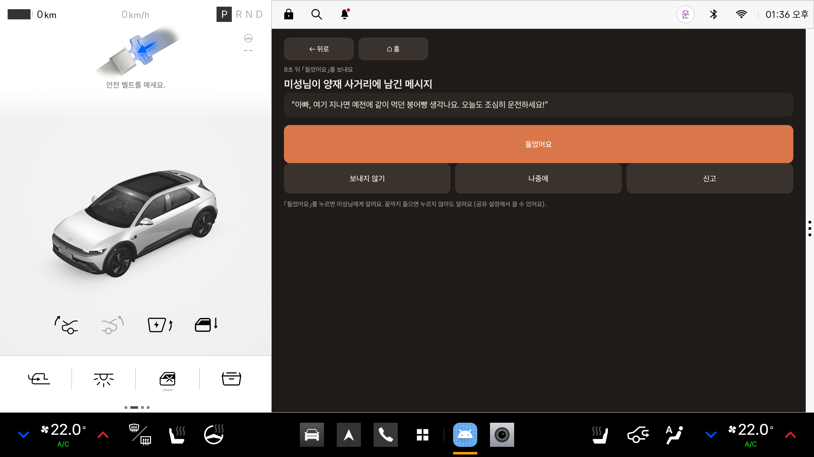
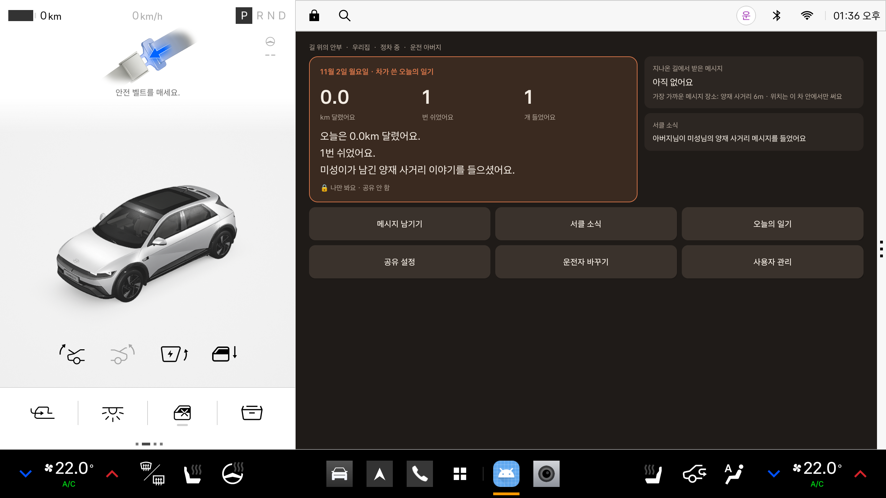
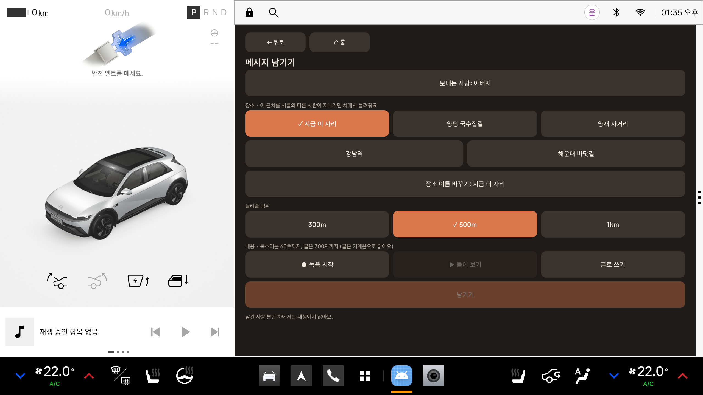
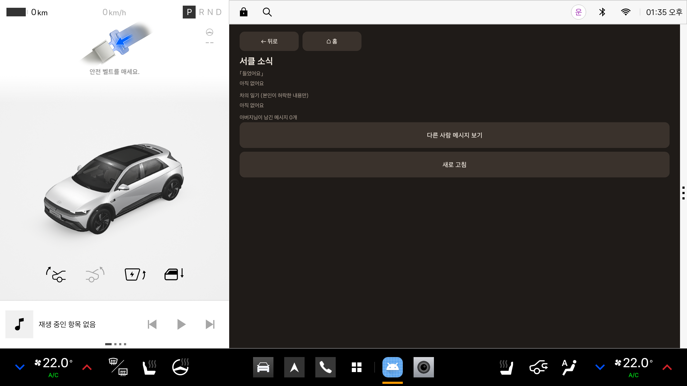
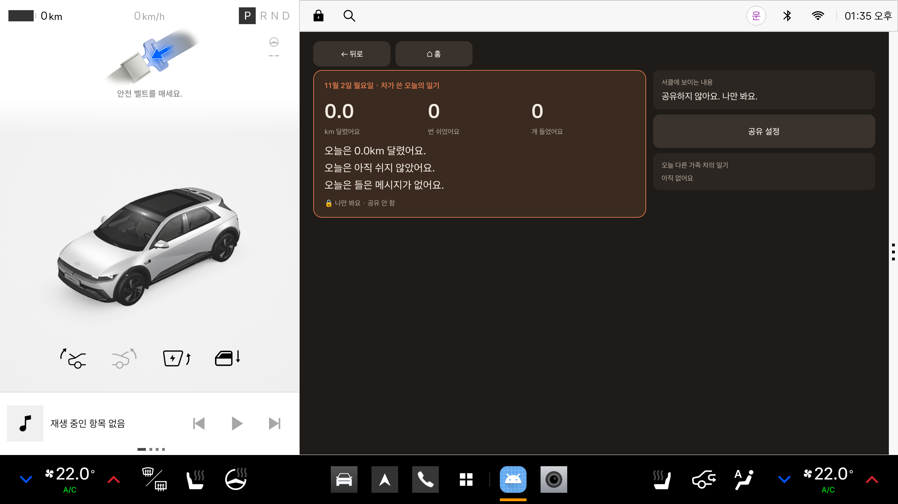

다온 — 주요 기능
가족이 장소에 남긴 메시지를 그곳을 지날 때 차에서 들려주고, 하루 운전을 차가 일기로 써 주는 앱 · Pleos 에뮬레이터에서 2026-11-02 캡처
1운전 흐름 (핵심)
① 홈 — 정차(P) 중
- 왼쪽 큰 카드: 차가 쓴 오늘의 일기 (달린 거리 · 쉬어간 횟수 · 들은 메시지)
- 오른쪽: 지나온 길에서 받은 메시지, 가장 가까운 메시지 장소, 서클 소식
- 아래 버튼 6개: 메시지 남기기 · 서클 소식 · 오늘의 일기 · 공유 설정 · 운전자 바꾸기 · 사용자 관리
② 운전(D) 중 — 내비가 앞, 앱은 뒤에서
- D로 바꾸면 앱 화면이 내비로 바뀜
- 메시지 장소 근처를 지나면 알림 한 번: “양재 사거리에 미성님의 메시지가 있어요 · 차를 세우면 들려드릴게요”
- 운전 중에는 재생하지 않고 모아 둠

③ 다시 정차(P) — 메시지 재생
- P에 두면 앱이 앞으로 나와 받은 메시지를 들려줌 (글 메시지는 화면에 표시)
- 끝까지 들으면 버튼 없이도 카운트다운 뒤 「들었어요」 전송 (“8초 뒤 「들었어요」를 보내요”)
- 보내지 않기 · 나중에 · 신고 버튼

④ 들은 뒤 — 일기와 소식이 저절로 바뀜
- 일기: 1번 쉬었어요 · 1개 들었어요 · “미성이가 남긴 양재 사거리 이야기를 들으셨어요.”
- 서클 소식: “아버지님이 미성님의 양재 사거리 메시지를 들었어요” — 보낸 사람도 폰에서 확인

2정차 중에만 쓰는 기능
메시지 남기기
- 보내는 사람 선택 · 장소(지금 이 자리 / 저장된 장소) · 장소 이름 바꾸기
- 들려줄 범위 300m / 500m / 1km
- 목소리 녹음(60초) + 들어 보기, 또는 글(300자, 기계음으로 읽음)
- 남긴 사람 본인 차에서는 재생되지 않음

서클 소식
- 누가 「들었어요」를 보냈는지, 가족 차의 일기(본인이 허락한 것만), 내가 남긴 메시지(지우기 가능)

오늘의 일기
- 차가 쓴 일기 + 서클에 보이는 범위(기본: 나만 봐요) + 다른 가족 차의 일기

3기어별 동작
| 기어 | 동작 |
|---|---|
| 모름 (시동 직후) | 기다림. 조작 버튼 숨김 |
| P | 앱 화면 사용 가능 · 받은 메시지 재생 · 입력은 이때만 |
| D | 내비로 전환 · 근처를 지나면 알림만 · 열린 입력 창은 닫음 |
| R | 재생만 멈춤 · 후방 카메라를 가리지 않게 내비를 띄우지 않음 |
| N | 재생 멈춤 · 조작 버튼 숨김 |
4뒤에서 하는 일
| 기능 | 내용 |
|---|---|
| 포그라운드 서비스 | 앱 화면을 닫아도 계속 돎 · 시동(부팅) 때 저절로 켜짐 |
| 상태 알림 | “운전 중 · 받은 메시지 2개” 등 현재 상태 표시 |
| 재생 알림 버튼 | 들었어요 · 다시 듣기(카운트다운 중엔 보내지 않기) · 나중에 |
| 메시지 보관 | 앱이 꺼져도 그날 받은 메시지를 기기에 저장해 두었다가 되살림 |
| 위치 보호 | 현재 위치는 서버에 보내지 않음 · 근처 판단은 차 안에서 |
| 서버 재시도 | 평소 30초마다 새로 불러옴 · 실패하면 5초 뒤 다시 |
5확인 상태
| 항목 | 상태 |
|---|---|
| 홈 · 메시지 남기기 · 서클 소식 · 오늘의 일기 화면 | ✅ 이번 캡처 |
| D 전환 시 내비 · 도착 알림 · P 재생 · 자동 「들었어요」 · 일기/소식 반영 | ✅ 이번 캡처 |
| R에서 내비 안 띄움 · 쉬어간 횟수 · 앱 종료 후 메시지 복구 | ✅ 지난 시험 |
| 녹음 | ⬜ 나중에 (에뮬레이터 마이크 설정 필요) |
| 알림 버튼 직접 누르기 | ⬜ 아직 |